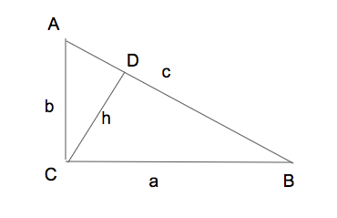

I was watching the video:
While the main result is beautiful, what caught my attention was the beautiful so-called Inverse Pythagoras Theorem
Of course, we know the Pythagorams Theorem:
$a^2 + b^2 = c^2$
To state the "Inverse Pythagoras Theorem", draw a perpendicular from the right angle to the hypotenuse, and call its length $h$:
The inverse Pythaogoras Theorem says:
$\frac{1}{a^2} + \frac{1}{b^2} = \frac{1}{h^2}$
Proving it is straight forward:
$ar(\triangle ABC) = ar(\triangle ADC) + ar(\triangle BDC)$
$\frac{1}{2}ab = \frac{1}{2}h.AD + \frac{1}{2}h.BD$
$ab = h.(AD + BD)$
$ab=hc$
$c = \frac{ab}{h}$
Now, put this in Pythagoras theorem identity:$a^2 + b^2 = (\frac{ab}{h})^2$
Rearranging:
$\frac{1}{a^2} + \frac{1}{b^2} = \frac{1}{h^2}$I must have proved it many times, but looking at it with the name "Inverse Pythagoras Theorem" gave me a new respect for it.